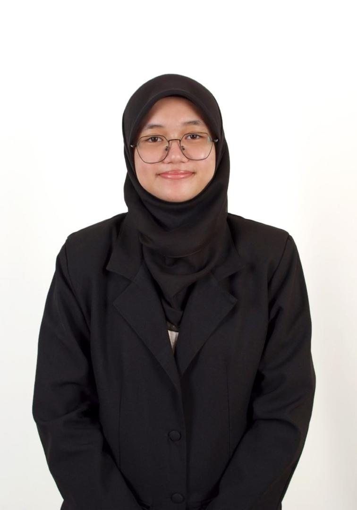

Welcome to My Portfolio
INDUSTRIAL ELECTRONIC AUTOMATION STUDENT
Hello, I'm Nur Amirah Haziqah
I'm an
I am currently pursuing a Bachelor of Technology in Industrial Electronic Automation (Hons.) at UMPSA. I have an interest in industrial automation, electronics, programming and IoT-based systems. I am eager to develop my technical knowledge, gain practical experience and contribute to innovative engineering projects.

What I Do
My academic interests and technical areas.
Industrial Automation
Learning PLC programming, control systems and industrial automation.
Programming
Developing programming skills through practical software and coding projects.
IoT Projects
Exploring ESP32, sensors and IoT-based monitoring applications.